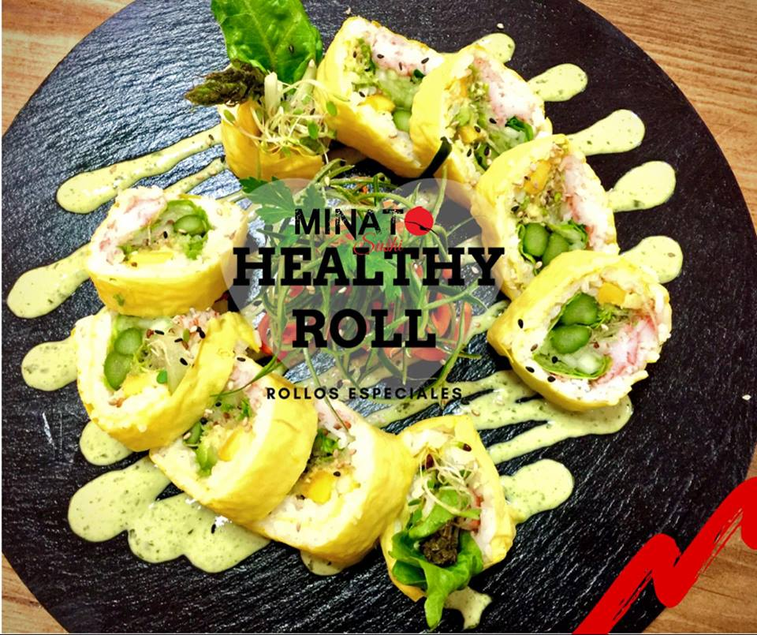
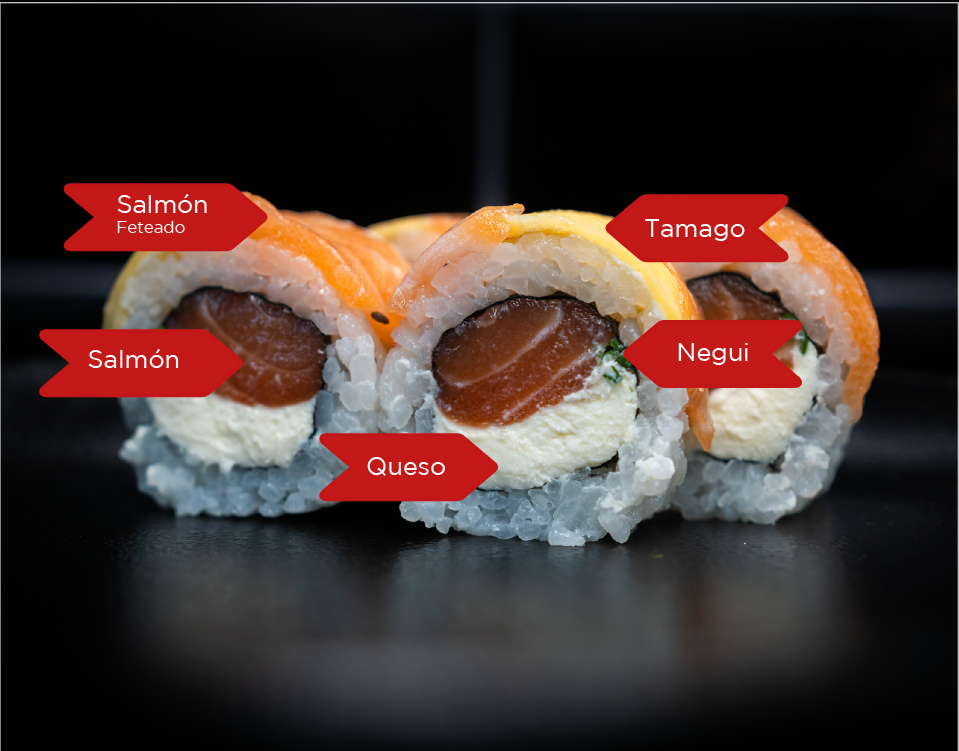

TIPOS DE SUSHI

mar y tierra
Carne asada, camarón, pepino, queso philadelphia y aguacate. Carne a la parrilla, camarones, pepino, queso crema phila, aguacate.
Chu Roll
consiste en un rollo dulce, a menudo apanado y frito, relleno de ingredientes dulces como dulce de leche, frutas, queso crema y/o nueces.

"Nene Roll"
aunque no es un nombre tradicional japonés, describe un rollo de sushi delgado y pequeño, diseñado para ser consumido en un solo bocado.

"Tiago Roll"
Topping de camarón empanizado y kanikama, masago bañado con aderezo especial y ajonjolí